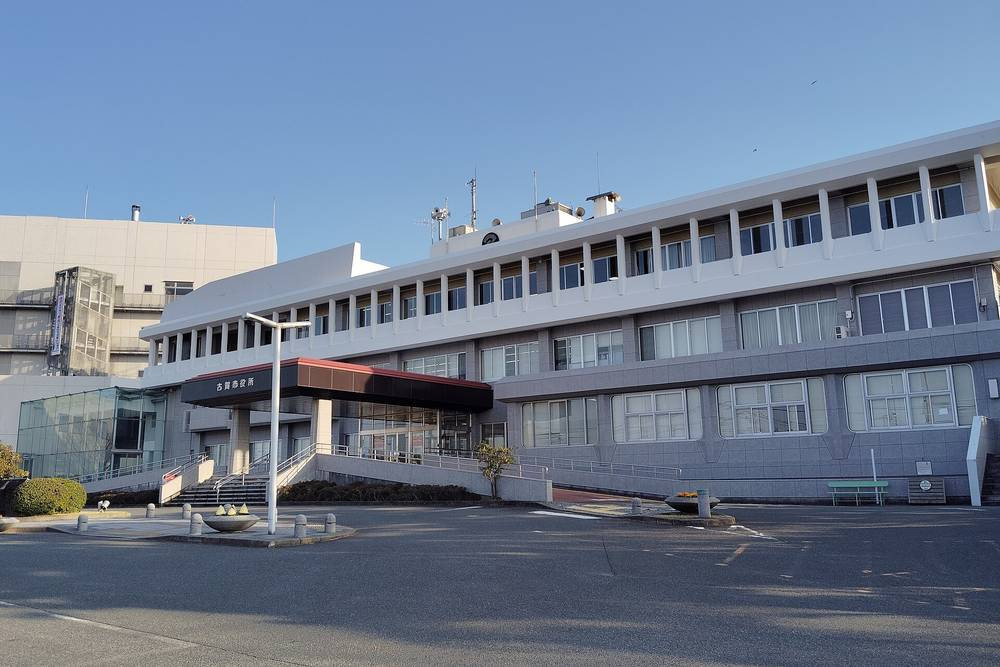

일본 후쿠오카현 고가시, 지역 기업·은행 등 16곳과 함께 출자한 지역에너지회사 '코가네이로' 세워

5월 25일 설립·7월 23일 기념식, 자본금 990만 엔…전력 중개·태양광 PPA·탈탄소 지원 플랫폼 운영 맡아, 사장은 시내 에너지 지출 연 약 150억 엔의 일부라도 지역에 돌리겠다고 밝혀
일본 후쿠오카현 고가시가 지역 기업·금융기관 등과 함께 출자한 지역에너지회사 주식회사 코가네이로(コガネイロ)가 지난 5월 25일 설립돼 전력 중개와 태양광 전력판매(PPA) 사업에 나섰다. 출자자는 고가시와 지역 기업 11곳, 후쿠오카은행·니시닛폰시티은행, 온가신용금고, 일반사단법인 에너지·마을디자인유닛 등 모두 16곳이며 자본금은 990만 엔이다. 회사는 시가 지난해 7월 본격 운영을 시작한 민관 협력 탈탄소 경영지원 플랫폼 '탈탄소 브리지 고가'의 운영도 맡는다. 사장은 규슈경제산업국 출신으로 2012년 10월부터 2016년 3월까지 고가 부시장을 지낸 사카모토(坂本正美) 씨이고, 구마모토시 지역에너지회사 '스마트에너지 구마모토' 대표를 지낸 요코오(横尾将) 씨가 업무집행이사를 맡았다. 사카모토 사장은 7월 23일 기념식에서 시내 가정과 기업이 1년에 쓰는 에너지 비용이 약 150억 엔으로 추산된다며 그 일부라도 회사를 통해 지역에 돌아가게 하겠다고 말했고, 다나베 가즈키(田辺一城) 시장은 이제 막 출발선에 섰다고 했다. 회사 설립 소식은 후쿠오카 지역 경제지의 8월 5일 자 주간판에 실렸다가 11월 5일 온라인에 공개됐다.
시민에너지 관점
자본금 990만 엔짜리 회사가 시내에서 해마다 빠져나가는 에너지 비용 약 150억 엔의 흐름을 바꾸겠다고 나선 것은, 지역 밖으로 나가던 전기요금을 지역 경제 안에서 돌게 하는 것이 지역에너지회사의 본질임을 보여 준다. 전기를 중개만 해서는 지역에 남는 것이 적다는 지적이 나올 수 있지만, 사장 스스로 전기를 그냥 흘려보내지 않겠다고 했듯 태양광 PPA로 지역 안에 발전 설비를 쌓아 가는 것이 다음 단계의 관건이다. 독일에서 지자체가 소유한 슈타트베르케(도시 공기업)가 지역의 전력·열 공급을 맡아 왔듯, 시와 지역 기업·금융이 함께 주인이 되는 회사는 수익과 결정권이 지역에 머문다는 점에서 외부 대기업의 공급과 다르다. 다만 주민이 직접 출자자로 들어오지 않은 점은 남은 숙제이며, 국내에서도 지자체·지역 기업·주민이 함께 소유하는 지역에너지회사 모델을 서둘러 설계해야 한다.
출처: ふくおか経済 2026-11-05 편집부 원문 보기
福岡県古賀市、地元企業・銀行など16者で出資した地域エネルギー会社「コガネイロ」を設立
5月25日設立・7月23日に記念式典、資本金990万円…電力取次・太陽光PPA・脱炭素支援プラットフォームの運営を担い、社長は市内のエネルギー支出年約150億円の一部でも地域に還元したいと表明
福岡県古賀市が地元企業や金融機関などと共同で出資した地域エネルギー会社、株式会社コガネイロが5月25日に設立され、電力取次と太陽光発電のPPA（電力販売）事業に乗り出した。出資者は古賀市と地元企業11社、福岡銀行・西日本シティ銀行、遠賀信用金庫、一般社団法人エネルギー・まちデザインユニットの計16者で、資本金は990万円だ。同社は、市が昨年7月に本格運用を始めた公民連携の脱炭素経営支援プラットフォーム「脱炭素ブリッジこが」の運営も担う。社長には、九州経済産業局出身で2012年10月から2016年3月まで古賀市副市長を務めた坂本正美氏が就き、熊本市の地域エネルギー会社「スマートエナジー熊本」の代表を務めた横尾将氏が業務執行取締役に就いた。坂本社長は7月23日の記念式典で、市内の家庭や企業が1年間に使うエネルギー代金は約150億円と推計されるとして、その一部でも同社を通じて地域に還元したいと述べ、田辺一城市長はまだスタート地点に立ったばかりだと語った。同社設立のニュースは、福岡の地域経済誌の8月5日発行の週刊版に掲載された後、11月5日にオンラインで公開された。
市民エネルギーの視点
資本金990万円の会社が、市内から毎年出ていく約150億円のエネルギー代金の流れを変えようとしていることは、地域外に流れていた電気料金を地域経済の中で循環させることこそ地域エネルギー会社の本質であることを示している。電気を取り次ぐだけでは地域に残るものは少ないとの指摘もありうるが、社長自ら電気をただ流すだけにはしないと語ったように、太陽光PPAで地域内に発電設備を積み上げていくことが次の段階の鍵となる。ドイツで自治体所有のシュタットベルケ（都市公社）が地域の電力・熱供給を担ってきたように、市と地元企業・金融機関がともに持ち主となる会社は、収益と決定権が地域にとどまる点で外部の大手企業による供給とは異なる。ただ住民が直接出資者として加わっていない点は残る課題であり、韓国でも自治体・地元企業・住民がともに所有する地域エネルギー会社のモデルを急いで設計すべきだ。
出典: ふくおか経済 2026-11-05 編集部 原文を読む
日本福冈县古贺市与当地企业、银行等共16方出资成立地区能源公司"コガネイロ"
5月25日成立、7月23日举行纪念仪式，注册资本990万日元…负责电力代理、光伏PPA和脱碳支援平台运营，社长表示要把市内每年约150亿日元能源支出中的一部分留在本地
日本福冈县古贺市与当地企业、金融机构等共同出资的地区能源公司"コガネイロ（Koganeiro）株式会社"已于5月25日成立，开展电力代理和光伏购电协议（PPA）售电业务。出资方包括古贺市、11家当地企业、福冈银行和西日本城市银行、远贺信用金库以及一般社团法人"能源与城镇设计小组"，共16方，注册资本990万日元。公司还负责运营市政府去年7月正式启动的官民合作脱碳经营支援平台"脱碳桥古贺"。社长坂本正美出身九州经济产业局，2012年10月至2016年3月曾任古贺市副市长；曾任熊本市地区能源公司"智慧能源熊本"代表的横尾将担任业务执行董事。坂本社长在7月23日的纪念仪式上表示，据估算市内家庭和企业每年的能源支出约为150亿日元，希望通过公司让其中哪怕一部分回流本地；市长田边一城则说，现在才刚刚站上起跑线。公司成立的消息先刊登于福冈地区经济刊物8月5日出版的周刊版，11月5日在网上公开。
市民能源视角
一家注册资本990万日元的公司要改变市内每年约150亿日元能源支出的流向，这说明让原本流出地区的电费在地方经济内循环，正是地区能源公司的本质。有人会指出只做电力代理留在当地的不多，但正如社长自己所说不会只是把电转手，通过光伏PPA在本地不断增加发电设备才是下一阶段的关键。就像德国由地方政府所有的城市公用事业公司（Stadtwerke）一直承担当地电力和热力供应一样，由市政府与当地企业、金融机构共同拥有的公司，收益和决策权都留在本地，这一点与外部大企业供电不同。不过居民没有直接成为出资方，仍是有待解决的课题；韩国也应尽快设计由地方政府、当地企业和居民共同拥有的地区能源公司模式。
来源: 福冈经济（ふくおか経済） 2026-11-05 编辑部 查看原文
Japan's Koga City in Fukuoka sets up regional energy company Koganeiro with 16 investors including local firms and banks
Founded on May 25 with a ceremony on July 23 and capital of 9.9 million yen, it brokers electricity, sells solar power under PPAs and runs a decarbonisation support platform; its president aims to keep part of the city's roughly 15 billion yen annual energy spending in the area
Koganeiro Co. (コガネイロ), a regional energy company jointly funded by the city of Koga in Fukuoka Prefecture, Japan, together with local businesses and financial institutions, was established on May 25 and has entered electricity brokering and solar power purchase agreement (PPA) sales. Its 16 investors are the city, 11 local companies, Fukuoka Bank and Nishi-Nippon City Bank, Onga Shinkin Bank and the general incorporated association Energy and Town Design Unit, and its capital is 9.9 million yen. The company will also run Datsutanso Bridge Koga, a public-private decarbonisation management support platform the city fully launched in July last year. Its president, Sakamoto (坂本正美), came from the Kyushu Bureau of Economy, Trade and Industry and served as Koga's deputy mayor from October 2012 to March 2016, while Yokoo (横尾将), a former head of Kumamoto city's regional energy company Smart Energy Kumamoto, is executive director. At a ceremony on July 23, Sakamoto said households and businesses in the city are estimated to spend about 15 billion yen a year on energy and that he wants to create conditions for at least part of it to return to the area through the company, while Mayor Kazuki Tanabe said the city has only just reached the starting line. News of the company's founding appeared in the August 5 weekly edition of a Fukuoka regional business publication and was posted online on November 5.
Citizen Energy View
A company with capital of 9.9 million yen setting out to redirect some of the roughly 15 billion yen in energy spending that leaves the city each year shows that the essence of a regional energy company is to keep electricity bills that once flowed out circulating in the local economy. Some may point out that little stays local from brokering alone, but as the president himself said he will not simply pass electricity through, building up generation within the area through solar PPAs is the key to the next stage. Just as municipally owned Stadtwerke in Germany have long handled local power and heat supply, a company owned jointly by the city, local businesses and lenders keeps both profits and decisions in the area, unlike supply from large outside firms. That residents have not joined directly as investors remains a task, and Korea too should move quickly to design regional energy companies owned jointly by local governments, local businesses and residents.
Source: Fukuoka Keizai 2026-11-05 Editorial staff Read the original